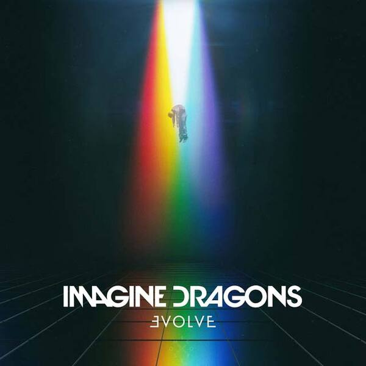
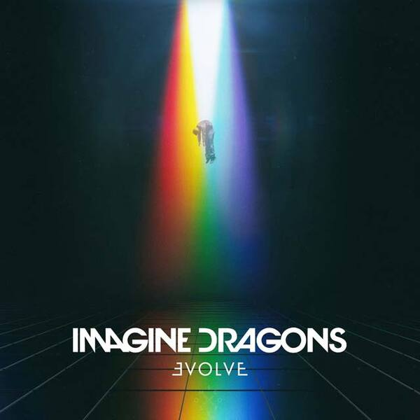

Imagine Dragons se formó en 2008 con Dan Reynolds como vocalista junto a otros estudiantes de la Universidad Brigham Young. Al tiempo, llegaría quien hoy es su guitarrista, Wayne Sermon. Luego, por invitación de éste, fue llamado Ben McKee, su bajista y, más adelante, Daniel Platzman, su baterista.

Dan Reynolds
Daniel Coulter Reynolds (Las Vegas, Nevada, 14 de julio de 1987), más conocido como Dan Reynolds, es un cantante, compositor y músico estadounidense, reconocido por ser el vocalista principal de la conocida banda de rock Imagine Dragons. Dan era reacio a convertirse en un músico profesional en parte porque Wayne Sermon, su compañero de banda, le dijo: "Don't do music because you want to do music, do music if you have to do music." ("No hagas música porque quieras hacer música, haz música si necesitas hacer música"). Después de comenzar la escuela en la Universidad Brigham Young (BYU), Reynolds encontró que no podría "hacer nada más" que música y comenzó su carrera de músico profesional. En Utah, Reynolds conoció y reclutó a Wayne Sermon y al baterista Andrew Tolman para formar Imagine Dragons.

Ben McKee
Benjamin Arthur McKee (Forestville, California, 7 de abril de 1985), más conocido como Ben McKee, es un músico estadounidense, mayormente conocido por ser el bajista de la banda de rock Imagine Dragons. McKee se crio en Forestville, California, y se graduó de la preparatoria El Molino.Creció tocando la guitarra acústica y el violín, antes de elegir el bajo en el quinto grado. En la escuela secundaria, continuó el aprendizaje de la guitarra como miembro de un trío de jazz, lo que influyó en su decisión de asistir a Berklee College of Music. Mientras que en Berklee, McKee tocó, en una presentación, junto a los que serían sus futuros compañeros de banda, Wayne Sermon y Daniel Platzman.

Daniel Wayne
Daniel Wayne Sermon (Las Vegas, Nevada, 15 de junio de 1984) es un compositor, músico y productor discográfico estadounidense; mayormente conocido por ser el guitarrista de la banda de rock Imagine Dragons. Wayne comenzó desde temprana edad a tocar el chelo y la guitarra. Desde que era niño estaba decidido a ser guitarrista. Su padre tenía un amplificador de audio, un tocadiscos y todos los álbumes de los Beatles en vinilo, a los que Sermon tanto le gustaba escuchar. También le gustaba el sonido de Tom Scholz (de Boston) y su acercamiento a los solos. Asistió a la Escuela de Música de Berklee, donde se especializó en doble interpretación de guitarra y composición; y finalmente se graduó en el 2008. Mientras estuvo en Berklee formó parte de un grupo de cinco guitarristas de jazz llamado The Eclectic Electrics.

Daniel Platzman
Daniel James Platzman (Atlanta, Georgia, 28 de septiembre de 1986), más conocido como Daniel Platzman, es un músico estadounidense, más conocido por ser el baterista de la banda de rock Imagine Dragons. Estudió en Berklee School of Music, donde obtuvo un grado en la composición de bandas sonoras. Mientras que en Berklee, Platzman toco en un concierto de Berklee Jazz Orchestra, la Orquesta de Jazz Urbano de Outreach y la Big Band de Berklee Rainbow, y recibió el Premio a la Mejor Vic Firth Musicianship y el Premio Rendish Michael en Film Scoring, Escuela de Música de Berklee. También toca la guitarra con la banda Imagine Dragons, con sus compañeros de banda Wayne Sermón y Ben McKee.
Discografía de la banda

 


Mercury Act II
El nuevo álbum de la banda se lanzara el 1 de Julio de 2022, este sera el sexto álbum de estudio de la banda y se trata de una secuela del álbum Mercury Act I. Las disqueras que participaran son KIDinaKORNER e Interscope Records y tendra como productor ejecutivo a Rick Rubin.


Bones
Fue lanzado como el sencillo principal de Mercury Act 2 el 11 de marzo de 2022. La canción se utilizó para promocionar la tercera temporada de la serie de Amazon Prime Video The Boys. El lanzamiento del video musical de la canción fue el 6 de abril, coincidiendo con el pre-ordenamiento del álbum.